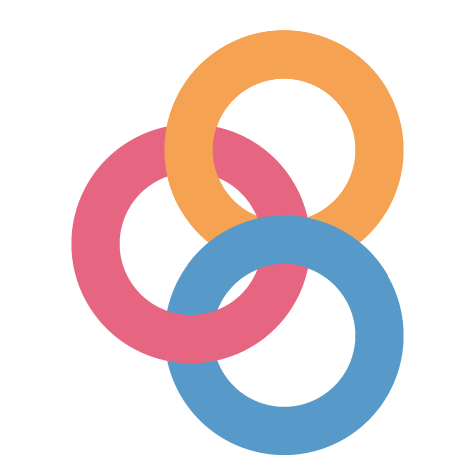

| Github Repo | HTML Slides | Executable Slides | |||
|---|---|---|---|---|---|
| Week 1 | Exploratory Data Science in Python | ||||
| Thursday, August 31 | Lecture 1A |  | |||
| Lecture 1B | |||||
| HW #1 assigned | |||||
| Week 2 | Data Visualization Fundamentals | ||||
| Thursday, September 7 | Lecture 2A | ||||
| Lecture 2B | |||||
| Week 3 | More Interactive Data Viz, Intro to Vector Data & GeoPandas | ||||
| Thursday, September 14 | Lecture 3A | ||||
| Lecture 3B | |||||
| HW #1 due | |||||
| HW #2 assigned | |||||
| Week 4 | Geospatial Analysis & Mapping | ||||
| Thursday, September 21 | Lecture 4A | ||||
| Lecture 4B | |||||
| Week 5 | More Geospatial Analysis: Urban Networks and Raster Data | ||||
| Thursday, September 28 | Lecture 5A | ||||
| Lecture 5B | |||||
| HW #2 due | |||||
| HW #3 assigned | |||||
| Week 6 | Web Scraping | ||||
| Thursday, October 5 | Lecture 6A | ||||
| Lecture 6B | |||||
| Week 7 | Working with APIs | ||||
| Thursday, October 19 | Lecture 7A | ||||
| Lecture 7B | |||||
| HW #3 due | |||||
| HW #4 assigned | |||||
| Week 8 | Analyzing and Visualizing Large Datasets | ||||
| Thursday, October 26 | Lecture 8A | ||||
| Lecture 8B | |||||
| Week 9 | From Notebooks to the Web: Part 1 | ||||
| Thursday, November 2 | Lecture 9A | ||||
| Lecture 9B | |||||
| HW #4 due | |||||
| HW #5 assigned | |||||
| Week 10 | From Notebooks to the Web: Part 2 | ||||
| Thursday, November 9 | Lecture 10A | ||||
| Lecture 10B | |||||
| Week 11 | Case Study: Predicting Home Prices in Philadelphia | ||||
| Thursday, November 16 | Lecture 11A | ||||
| Lecture 11B | |||||
| Week 12 | Case Study: Predicting Rideshare Demand | ||||
| Tuesday, November 21 | Lecture 12A | ||||
| Lecture 12B | |||||
| HW #5 due | |||||
| HW #6 assigned | |||||
| Week 13 | Case Study: Clustering Analysis in Python | ||||
| Thursday, November 30 | Lecture 13A | ||||
| Lecture 13B | |||||
| Monday, December 4 | HW #6 due | ||||
| Final project proposal due | |||||
| Week 14 | Case Study: Advanced Raster Analysis | ||||
| Thursday, December 7 | Lecture 14A | ||||
| Lecture 14B | |||||
| Wednesday, December 20 | Final project due | ||||
Schedule: Section 402
Note
The schedule is tentative and could change in the future.